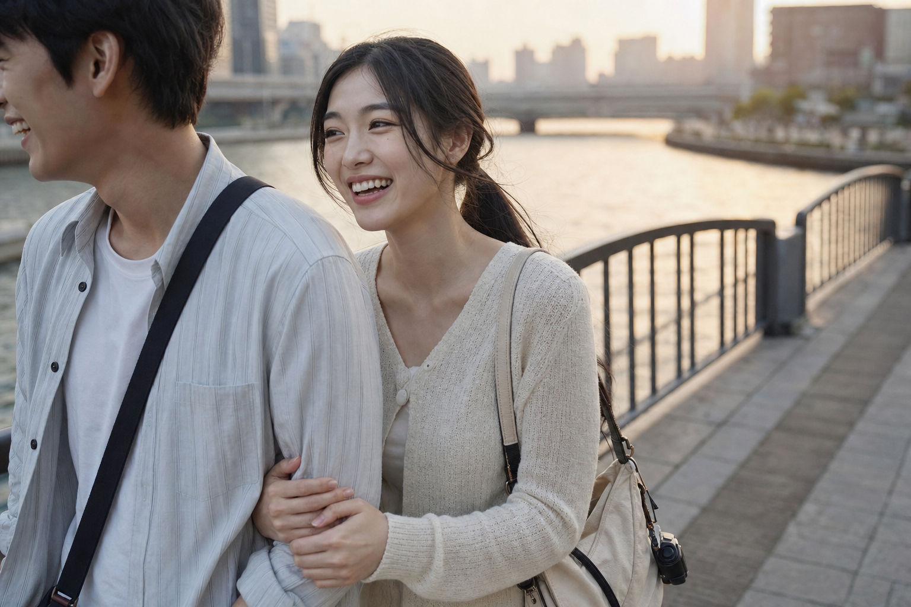

064. 사흘의 시차
첫날 오리엔테이션이 끝난 오후, 한서윤이 학원 앞에서 기다리고 있었다. 어젯밤보다 머리를 조금 느슨하게 묶고, 얇은 여름 니트에 무릎 위로 떨어지는 단정한 스커트를 입고 있었다. 마른 편이지만 길게 뻗은 선이 옷 안에서 자연스럽게 살아났다. 그녀는 용식을 발견하자 먼저 손을 들었다. 한국에서 학원 복도에서 보이던 조용한 얼굴과 달리, 오늘은 웃음을 숨기지 않았다.
[한서윤] "어땠어, 첫날. 다 알아들었어?"
[김용식] "반은 알아듣고 반은 눈치로 때웠어. 근데 재밌어."
[한서윤] "다행이네. 오늘은 뭐 할까."
[김용식] "네가 가고 싶은 데."
[한서윤] "그 말 하면 진짜 많이 걸어야 돼."
그녀는 그렇게 말하며 자연스럽게 그의 팔짱을 꼈다. 학원 앞을 오가는 학생들 중에는 둘을 아는 사람이 아무도 없었다. 그 사실이 한서윤을 더 대담하게 만드는 것 같았다. 용식이 살짝 굳자, 그녀가 옆에서 고개를 기울이며 웃었다.
[한서윤] "여기선 학원자료 아니잖아."
용식은 그 말에 웃어야 할지, 미안해해야 할지 알 수 없었다. 그래도 팔을 빼지는 않았다.
두 사람은 신주쿠 뒷골목의 작은 이자카야에서 저녁을 먹었다. 빨간 등불이 걸린 좁은 입구를 지나 안으로 들어서자, 숯불 냄새와 사람들의 웃음소리가 뒤섞여 들려왔다. 좁은 테이블 위로 꼬치구이 접시가 하나둘 쌓였다. 한서윤은 젓가락으로 꼬치를 뒤적이며 오늘 하루 자신이 혼자 돌아본 동네 이야기를 신나게 늘어놓았다.
[한서윤] "낮에 혼자 근처 돌아다녔거든. 여기 사람들 진짜 자전거 많이 타더라. 골목마다 자판기도 왜 이렇게 많은지."
[김용식] "그러게, 나도 신기했어."
[한서윤] "그리고 나 오늘 길 세 번 잃었어. 네가 있었으면 두 번만 잃었을 텐데."
그녀는 자기가 한 말에 스스로 웃음을 터뜨렸다. 맥주잔을 들고 웃는 얼굴에는 어제의 상처나 한국에서의 조심스러움이 거의 남아 있지 않았다. 용식은 그런 얼굴을 보면서, 이 3일이 그녀에게 얼마나 큰 예외인지 조금씩 실감했다.
식사를 마치고 나온 두 사람은 골목 어귀에서 잠깐 걸음을 멈췄다.
[한서윤] "이제 어디로 가지?"
[김용식] "너희 숙소로 갈까, 아니면……"
한서윤은 대답 대신 그의 팔을 가볍게 잡아끌었다. 가로등 불빛 아래로 두 사람의 그림자가 나란히 늘어졌다. 좁은 계단을 오르는 동안 누구도 먼저 말을 꺼내지 않았지만, 걸음은 자연스럽게 같은 방향으로 향했다.
호텔 방문 앞에서 한서윤이 카드키를 꽂다 말고 잠깐 그를 돌아봤다.
[한서윤] "괜찮겠어?"
[김용식] "어."
문이 열리고, 두 사람은 안으로 들어섰다. 방문이 닫히자 바깥의 소음이 갑자기 멀어졌다. 한서윤은 가방을 내려놓고 창문 쪽으로 걸어가 커튼을 반쯤 쳤다. 네온사인 불빛이 그녀의 어깨와 옆얼굴을 희미하게 비췄다.
[한서윤] "오늘은 어제보다 덜 어색하다."
[김용식] "어제도 별로 안 어색해 보였는데."
[한서윤] "나 엄청 떨렸어. 티 안 냈을 뿐이지."
그녀가 돌아서며 웃었다. 그 웃음은 낮의 웃음보다 느리고 조용했다. 용식이 다가가자 한서윤은 피하지 않고 그의 셔츠 자락을 가볍게 잡았다.
[한서윤] "내일 지나면 끝이잖아."
[김용식] "응."
[한서윤] "그러니까 오늘은 시간 아깝게 굴지 말자."
대답은 길 필요가 없었다. 두 사람 사이의 거리가 다시 사라졌고, 침대 옆 스탠드 불빛이 한 번 흔들리듯 낮아졌다.
커튼 너머 도쿄의 밤빛만 방 안에 희미하게 남았다.
이튿날 아침, 커튼 틈으로 들어온 햇살에 눈을 뜬 용식은 낯선 천장을 잠깐 바라봤다. 한서윤은 이미 일어나 창가에 서서 거리를 내려다보고 있었다.
[한서윤] "일어났어? 씻고 나가자, 아침 늦기 전에."
두 사람은 근처 편의점에서 오니기리와 캔커피로 아침을 대충 때우고 아사쿠사로 향했다. 편의점 앞에서 한서윤은 용식의 캔커피를 빼앗아 한 모금 마시더니, 자기 것과 맛이 다르다며 웃었다. 그 웃음이 너무 가벼워 보여서 용식도 따라 웃었다. 센소지 절 앞은 이미 관광객들로 붐볐다. 한서윤은 참배로 양옆에 늘어선 기념품 가게들을 구경하며 연신 카메라 셔터를 눌렀다.
[한서윤] "이거 봐, 이 부적 예쁘다."
[김용식] "그거 사려고?"
[한서윤] "어, 기념으로."
그녀는 작은 부적 하나를 사서 가방에 매달았다. 절 안쪽에서는 향 연기가 자욱하게 피어오르고 있었다. 사람들이 향로 앞에 줄지어 서서 연기를 몸에 끼얹고 있었다. 한서윤은 장난스럽게 용식의 어깨 쪽으로 향 연기를 밀어 보내며 웃었다.
[한서윤] "머리 좋아지라고."
[김용식] "나 공부하러 온 사람인데 이미 늦은 거 아니야?"
[한서윤] "그러니까 더 해야지."
두 사람은 인파 속을 천천히 걸으며 사진을 몇 장 찍었다. 한서윤은 사람들 사이에서 길을 잃을까 봐 그런다는 핑계로 그의 팔을 자주 붙잡았다. 손등이 닿고, 팔꿈치가 겹치고, 어느 순간부터는 굳이 핑계가 필요 없어졌다.
점심으로 근처 노점에서 다코야키를 사 먹고, 오후에는 스미다강을 따라 걸었다. 한서윤은 뜨거운 다코야키를 한입에 넣었다가 놀라서 손부채질을 했고, 용식은 종이컵에 담긴 물을 급히 건넸다. 그녀는 눈가에 눈물까지 고인 채 웃음을 터뜨렸다. 강바람이 후텁지근한 더위를 잠깐이나마 식혀 줬다. 강변 산책로를 따라 관광객들과 현지 주민들이 뒤섞여 걷고 있었다.
[한서윤] "여기 진짜 좋다. 다음에 또 오고 싶어."
[김용식] "다음이 있을까."
그 말이 나온 순간, 한서윤의 표정이 잠깐 굳었다. 그녀는 애써 웃으며 말을 돌렸다.
[한서윤] "몰라, 그건. 일단 지금은 좋으니까 됐어."
그녀는 말을 끝내고 다시 그의 팔짱을 꼈다. 이번에는 조금 세게 잡았다. 용식은 강물 쪽을 보며 걸었지만, 팔 안쪽에 닿는 그녀의 손가락 힘이 계속 신경 쓰였다.
강변 벤치에 앉아 지는 해를 바라보며, 한서윤이 문득 그의 옆얼굴을 바라봤다.
[한서윤] "너 진짜 이런 거 아무렇지 않게 해 줄 수 있는 애구나."
[김용식] "무슨 소리야."
[한서윤] "이 호텔, 선물, 이런 거. 나한텐 계산기 두드려야 하는 일인데, 너한텐 그냥 아무 일도 아니잖아."
용식은 뭐라 답해야 할지 몰라 그녀를 바라봤다. 한서윤은 그 시선을 피하듯 다시 강물로 눈을 돌렸다.
[한서윤] "나쁜 뜻으로 하는 말 아니야. 그냥, 가끔 그 차이가 크게 느껴져서."
노을이 강물 위로 붉게 번지고 있었다. 두 사람은 한참을 그렇게 말없이 앉아 있었다. 지나가는 유람선의 뱃고동 소리가 멀리서 울렸다.
저녁이 되어 두 사람은 근처 이자카야에서 술을 한잔했다. 어젯밤보다는 가벼운 분위기였다. 한서윤은 낮의 그 말을 다시 꺼내지 않았고, 용식도 굳이 되묻지 않았다. 대신 오늘 찍은 사진들을 카메라 화면으로 함께 넘겨 보며 시간을 보냈다. 사진 속 한서윤은 생각보다 자주 웃고 있었다. 캔커피를 들고 웃는 얼굴, 부적을 가방에 달며 고개를 숙인 얼굴, 강변에서 바람에 머리카락이 흐트러진 얼굴. 학원에서 보던 한서윤과 같은 사람인데, 전혀 다른 사람처럼 보였다.
[한서윤] "이 사진 잘 나왔다. 나중에 인화해서 가질래. 여기 강 배경으로 나온 거."
[김용식] "그래."
밤이 깊어지면서 두 사람은 다시 호텔로 돌아갔다. 어젯밤과 비슷한 흐름이었지만, 그 안에 담긴 온도는 조금 달랐다. 서로에게 남은 시간이 하루밖에 없다는 걸 두 사람 모두 알고 있었다. 방에 들어서자 한서윤은 카메라를 협탁 위에 내려놓고, 오늘 산 부적을 가방에서 풀어 침대 옆에 올려두었다.
[한서윤] "이거 보면 나 생각나겠지."
[김용식] "그걸 왜 나한테 맡겨."
[한서윤] "맡기는 거 아니야. 그냥 오늘 밤까지만 여기 둘래."
그 말투가 괜히 아무렇지 않은 척하고 있다는 걸 용식은 알았다. 그는 그녀에게 다가가 부적을 내려다보다가, 조심스럽게 그녀의 손을 잡았다. 한서윤은 손을 빼지 않았다.
방 안의 조명이 낮아지고, 두 사람은 더 이상 내일 이야기를 꺼내지 않았다.
셋째 날 아침, 두 사람은 늦게까지 호텔 근처를 산책했다. 근처 빵집에서 산 멜론빵을 나눠 먹으며 마지막 남은 시간을 천천히 흘려보냈다. 오후가 되자 한서윤은 짐을 정리하기 시작했다.
[김용식] "짐은 다 쌌어?"
[한서윤] "어, 거의."
그녀는 캐리어 지퍼를 잠그며 방 안을 한 번 둘러봤다. 사흘간 머물렀던 흔적을 지우듯, 협탁 위와 침대 옆을 꼼꼼히 확인했다. 구겨진 편의점 영수증, 빈 캔커피, 카메라 충전기, 침대 옆에 잠깐 내려놓았던 부적까지 하나씩 제자리를 찾았다. 체크아웃은 그가 미리 결제해 둔 대로 프런트에 카드키만 반납하면 끝이었다. 부적이 매달린 가방을 어깨에 메며, 그녀는 짧게 숨을 골랐다.
공항으로 향하는 리무진 버스 정류장까지 용식이 배웅했다. 오후 햇살이 두 사람 위로 길게 드리웠다. 캐리어 바퀴가 보도블록 위를 굴러가는 소리가 조용한 골목에 울렸다.
정류장까지 걷는 동안 한서윤은 끝까지 그의 팔을 놓지 않았다. 처음 도착한 날처럼 대담하게 끼는 팔짱은 아니었다. 손끝으로 소매를 붙잡고 있다가, 버스 정류장이 가까워질수록 조금씩 힘이 빠지는 식이었다. 용식은 그 손을 내려다보다가 결국 제 손으로 감쌌다.
[한서윤] "잘 지내. 남은 기간 동안."
[김용식] "너도, 조심히 가."
[한서윤] "연락은... 그냥 가끔만 하자. 너무 자주 하면 서로 힘드니까. 너도 지금 신경 써야 할 사람 따로 있잖아."
[김용식] "그래."
버스가 도착하고, 한서윤이 캐리어를 끌고 탑승구 앞에 섰다. 마지막으로 그녀가 돌아봤다.
[한서윤] "고마웠어, 사흘 동안. 덕분에 좋은 추억 하나 생겼다."
그 말을 끝으로 그녀는 버스에 올라탔다. 창가 자리에 앉은 한서윤이 손을 흔들었다. 유리창 너머로 그녀의 표정은 웃는 듯도, 아닌 듯도 했다. 버스가 출발하고 점점 멀어지는 걸 보며, 용식은 그 자리에 한참을 서 있었다.

정류장 벤치에 혼자 앉아, 용식은 지난 사흘을 떠올렸다. 라멘집, 센소지, 강변의 노을, 그리고 그녀가 남긴 마지막 말들. "너 진짜 이런 거 아무렇지 않게 해 줄 수 있는 애구나"라는 문장이 유독 오래 마음에 남았다.
버스 정류장 전광판에 다음 도착 시간이 깜빡였다. 용식은 자리에서 일어나 기숙사 쪽으로 걸음을 옮겼다. 초여름 오후의 햇살이 등 뒤로 길게 그림자를 늘어뜨렸다. 이제부터는 정말 혼자 남은 두 달이 시작되고 있었다.